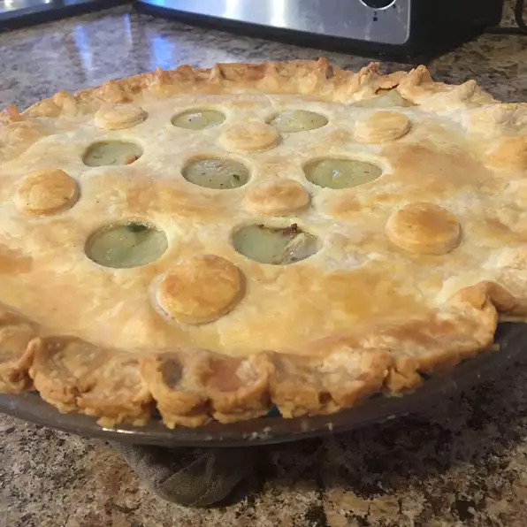

Chicken Pot Pie

Description:
Chicken pot pie made from scratch with carrots, peas, and celery with a crunchy crust.
Ingredients:
- Boneless, skinless chicken
- Peas, carrots, onion, celery, mushrooms, and green peppers.
- Salt, pepper, and celery seed.
- Chicken broth and milk for smoothness and consistency
- Two unbaked pie crust
Steps:
- Boil the cubed chicken along with the beggies for 15 minutes then drain and set them aside.
- Cook the onions in butter until translucent, then stir in the flour and seasonings.
- Add the chicken broth and milk and simmer until the filling is thick.
- Place the chicken and vegetable mixture into an unbaked pie crust. Pour the chicken broth and milk mixture over it.
- Cover the initial crust with the second crust and seal the edges.
- Cut slits in the tiop to allow the steam to escape.
- Bake until the pastry is golden brown and filling bubbly.